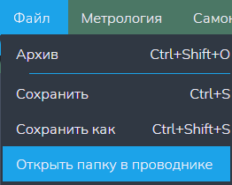

Функция "Открыть папку в проводнике"
Данная функция открывает корневую папку нашего файла
Внимание: данная кнопка доступна только когда открыт хотя бы один текстовый редактор!
Путь и вызов
Нахождение в программе
Верхнее меню → "Файл" → "Открыть папку в проводнике"
Горячие клавишы
ОтсутствуетНа изображении показано нахождение данной функции в программе:

Действия после нажатия
После нажатия горячих клавиш или ЛКМ по кнопке "Открыть папку в проводнике" файловый менеджере ОС отроет папку, в которой сейчас находится файл.